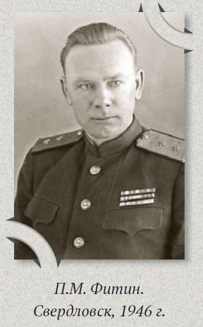

Павел Михайлович Фитин — одна из самых интересных фигур советской внешней разведки. Его часто вспоминают как руководителя разведки в годы Великой Отечественной войны, но для нас он интересен ещё и как человек, который умел превращать большой поток разрозненной информации в ясные выводы и решения.
Важно сразу уточнить: Фитин был руководителем внешней разведки, а не контрразведки. Он возглавил советскую внешнюю разведку 13 мая 1939 года, когда ему был всего 31 год. До этого он не был классическим разведчиком старой школы: учился в Тимирязевской сельскохозяйственной академии, служил в армии, а затем работал в издательстве «Сельхозгиз», где был заведующим редакцией. Именно этот редакторский опыт позже оказался важным для его стиля работы с разведывательными материалами.
Фитин пришёл к руководству разведкой в очень тяжёлый момент. После репрессий конца 1930-х годов внешняя разведка была серьёзно ослаблена: были нарушены связи, пострадали кадры, требовалось восстанавливать работу легальных и нелегальных резидентур.
Сургутский краеведческий музей отмечает, что важнейшей задачей Фитина стало восстановление работы советских резидентур за рубежом, и для этого ему пришлось проявить большие организаторские способности.
То есть Фитин занимался не просто текущим управлением. Он фактически восстанавливал информационную систему: источники, каналы передачи, резидентуры, порядок обработки данных, связь разведывательных сведений с решениями руководства.
Один из самых практичных принципов, связанных с именем Фитина, — это новый порядок подачи аналитических материалов. В публикации Службы внешней разведки говорится, что именно при Фитине утвердилась форма подготовки аналитических документов, где материал начинается с главного и с выводов, а уже потом идёт подтверждение.
В историческом материале «Павел Фитин: командующий невидимым фронтом» этот принцип раскрыт ещё подробнее. Там подчёркивается, что до Фитина документы строились от частного к общему: сначала длинная преамбула, факты, обстоятельства, подробности, и только потом выводы. Фитин, опираясь на опыт работы в издательстве, посчитал такую форму неудобной для руководства и предложил выносить выводы в начало документа. Если руководитель считал эти выводы важными, он мог затем изучить подробности и обоснования ниже.
Суть метода можно выразить просто:
Это не просто литературный приём. Это управленческая технология. Она экономит время, снижает риск недопонимания и помогает быстрее принимать решения.
До разведки Фитин работал с текстами. Он понимал, как человек читает документ, где теряет внимание, где устаёт, где может не дойти до главного. Этот опыт оказался полезен в разведке, где документы были не просто бумагами, а материалами для принятия решений.
В редакторской работе есть важный навык: из большого объёма текста выделить главное. Убрать лишнее. Расставить смысл по порядку. Сделать так, чтобы читатель быстро понял, о чём речь.
Фитин перенёс этот навык в сферу разведки. В этом и состоит его особенность: он не просто получал информацию, а думал о том, как эта информация будет понята тем, кто принимает решение.
Если рассматривать Фитина шире, можно выделить несколько принципов его работы. Они важны не только для понимания разведки, но и для обычной жизни, управления, текстов, общения, семейных вопросов, работы с документами и принятия решений.
Фитин восстанавливал и развивал работу зарубежных резидентур, чтобы информация поступала не из одного места, а из разных стран, по разным направлениям и каналам. Это позволяло собирать картину не по одному сообщению, а по совокупности сигналов.
Суть этого принципа в том, что один источник почти всегда даёт неполную картину. Один человек может ошибаться, один документ может быть неточным, одно мнение может быть пристрастным, одно наблюдение может быть случайностью. Но когда похожие сигналы приходят из разных мест, они начинают складываться в более надёжную картину.
Механизм такой:
Польза этого принципа в том, что человек перестаёт принимать решения по одному впечатлению. Он не бросается сразу в выводы, а собирает несколько подтверждений. Это снижает риск ошибки.
В обычной жизни это работает так же. Если человек хочет понять ситуацию в семье, на работе, в учёбе ребёнка, в споре, в бытовом вопросе, ему не стоит опираться только на одну фразу или один эпизод. Нужно посмотреть шире: что повторяется, что подтверждается, что говорят разные люди, какие факты есть, какие обстоятельства совпадают. Так появляется не эмоциональная реакция, а более трезвое понимание.
Информация сама по себе ещё не решение. Её нужно проверить, сопоставить, отделить главное от второстепенного, выявить противоречия и только потом сформулировать вывод.
Суть этого принципа в том, что большой объём сведений может не помогать, а наоборот запутывать. Человек может собрать много фактов, сообщений, документов, объяснений, мнений, но всё равно не понимать, что происходит. Поэтому нужна не просто информация, а её обработка.
Механизм такой:
Польза этого принципа в том, что хаос превращается в понятную структуру. Человек уже не тонет в деталях, а видит, где главное, где второстепенное, где подтверждённый факт, а где догадка или эмоция.
В обычной жизни это особенно полезно, когда много разговоров, переписок, претензий, объяснений, документов. Например, в семейном конфликте можно бесконечно вспоминать десятки эпизодов. А можно спросить: какая проблема повторяется? Что в ней главное? Что нужно решить? Тогда вместо обиды появляется предмет разговора. Аналитическая обработка нужна не для усложнения, а наоборот — для упрощения.
Даже важная информация может быть бесполезной, если она подана так, что человек не видит главного. Метод Фитина как раз решал эту проблему: сначала руководитель видит выводы, затем — доказательную часть.
Суть этого принципа в том, что информация должна быть не только собрана и понята, но ещё и правильно передана. Если вывод спрятан в конце длинного текста, человек может до него не дойти. Если просьба спрятана после длинной предыстории, собеседник может не понять, чего от него хотят.
Механизм такой:
Польза этого принципа — экономия времени и снижение недопонимания. Человек сразу видит суть вопроса и может решить, нужны ли ему детали. В обычной жизни этот принцип помогает писать письма, заявления, сообщения, объяснять просьбы, говорить с близкими, решать рабочие и бытовые вопросы. Он не делает речь грубой. Он делает её ясной.
Разведка под руководством Фитина передавала предупреждения о подготовке Германии к нападению. В статье СВР об одном из дней Фитина говорится, что он представлял Сталину подробный доклад, главный вывод которого сводился к тому, что война на пороге.
Но суть принципа не только в самом факте предупреждения. Работа на опережение означает, что человек смотрит не только на то, что уже случилось, но и на то, к чему ведут текущие признаки. Обычный подход: проблема уже произошла — начинаем реагировать. Подход на опережение другой: появились первые сигналы — нужно понять, какой процесс за ними стоит и к чему он может привести.
Механизм такой:
В обычной жизни это можно применять постоянно. Если в семье всё чаще возникают одинаковые ссоры — это сигнал. Если ребёнок стал избегать школы или кружка — сигнал. Если человек всё чаще откладывает важное дело — сигнал. Работа на опережение помогает не тушить пожар, а увидеть дым раньше. И чем раньше человек увидел слабый сигнал, тем мягче и спокойнее можно решить вопрос.
С именем Фитина связывают важную роль советской разведки в атомной теме. Материалы СВР и исторические публикации отмечают, что одной из крупнейших операций разведки стала добыча информации, которая помогла СССР в создании ядерного оружия.
Суть этого принципа в том, что будущее часто определяется не только политическими решениями или текущими событиями, но и новыми знаниями, технологиями, методами, инструментами. Тот, кто вовремя замечает важное техническое или профессиональное изменение, получает преимущество.
Механизм такой:
В обычной жизни это тоже применимо. Человек учится пользоваться новыми цифровыми сервисами, чтобы не зависеть от других. Родитель изучает современные подходы к обучению, чтобы лучше понимать ребёнка. Специалист осваивает новые инструменты в своей профессии, чтобы не потерять востребованность. Главная мысль этого принципа: важно смотреть не только на то, что работает сегодня, но и на то, что будет определять завтрашний день.
Если говорить простым языком, его главное ноу-хау не в одном приёме, а в целой культуре работы с информацией.
Метод можно применять не только в государственных документах. Он полезен любому человеку, который пишет письма, объясняет проблему, обращается в организацию, разговаривает с близкими, просит помощи, составляет заявление, готовит доклад или пытается донести мысль.
Главное правило:
Метод Фитина особенно полезен там, где человек хочет быть понятым, но рискует утонуть в подробностях. Его можно применять в письмах, разговорах, заявлениях, семейных ситуациях, просьбах о помощи, объяснениях на работе, обращениях в разные организации и в любых сложных вопросах.
Обычно человек начинает так:
Человек старается объяснить всё подробно, но собеседник может потерять главную мысль. По методу Фитина лучше начать так:
Так собеседник сразу понимает: это не просто эмоциональная жалоба, а просьба разобраться и найти решение.
Обычно человек пишет длинно, и суть просьбы появляется только в конце. По методу Фитина лучше:
Так адресат сразу понимает, чего от него хотят.
Обычно трудный разговор начинается с накопленных обид: «Ты всегда так делаешь, я уже устал объяснять…». После такого начала человек часто начинает защищаться, спорить или уходить от разговора. По методу Фитина лучше начать с сути:
А уже потом можно объяснить, что именно задело, какие случаи повторялись и почему это важно.
Обычно человек ходит вокруг да около, и собеседник не понимает, какая конкретно помощь нужна. По методу Фитина лучше:
Так просьба становится ясной, и человеку проще ответить.
Обычно человек начинает с оправданий, и руководитель слышит только оправдание, а не суть. По методу Фитина лучше:
Здесь сразу есть главное: что произошло, почему и что предлагается сделать.
Обычно человек пишет несколько сообщений подряд, и люди начинают переспрашивать. По методу Фитина лучше:
Так обсуждение становится короче и понятнее.
Обычно человек начинает с долгого описания, и специалисту приходится самому вытаскивать главное. По методу Фитина лучше:
Так человек сразу задаёт направление разговора.
Обычно взрослый начинает с нотации, и ребёнок закрывается, спорит или молчит. По методу Фитина лучше:
Так разговор начинается не с обвинения, а с цели.
Обычно человек начинает доказывать всё сразу, и разговор быстро превращается в спор деталей. По методу Фитина лучше:
Так человек не тонет в частностях, а возвращает разговор к сути.
Обычно разговор начинается издалека, и человек может обидеться или замкнуться. По методу Фитина лучше:
А уже потом можно объяснить, почему это важно, какие есть риски и какие варианты решения возможны.
Обычно семейный разговор начинается с общего раздражения и быстро превращается во взаимные претензии. По методу Фитина лучше:
Так вместо общей обиды появляется конкретный вопрос, который можно решить.
Обычно человек начинает резко, и в ответ часто начинается конфликт. По методу Фитина лучше:
Главное сказано сразу, но без нападения.
Обычно человек долго подводит к теме, и собеседник может не понять, к чему ведёт разговор. По методу Фитина лучше:
Так разговор становится прямым, но не грубым.
Обычно человек пишет длинное письмо с предысторией, и получатель может не понять, чего именно от него ждут. По методу Фитина лучше:
Так письмо сразу становится ясным.
Перед письмом, заявлением, сообщением или разговором полезно задать себе четыре вопроса: что главное? почему это важно? что я прошу или предлагаю? какие подробности нужны после этого? Если сначала ответить на них, текст становится яснее — человек уже не прячет суть в конце, а сразу показывает, что произошло, зачем это важно и какого результата он хочет.
Есть ошибочный путь:
Есть правильный путь:
В этом и заключается практическая сила метода.
Метод Фитина не существует в пустоте. В разных сферах есть похожие подходы, которые решают ту же задачу: не прятать главное в конце, а помогать человеку быстрее понять суть.
Но ядро одно:
Не стоит утверждать слишком категорично, что Фитин единолично «изобрёл» этот метод в абсолютном смысле. Точнее говорить так: с его именем связывают утверждение в советской внешней разведке такого порядка подачи аналитических материалов, при котором сначала излагались главные выводы, а затем подтверждающие факты и подробности. Это формулировка аккуратная и достоверная. Она опирается на материалы СВР и исторические публикации.
Павел Фитин интересен не только как руководитель внешней разведки военного времени, но и как человек, который показал силу ясной подачи информации. Его редакторский опыт помог ему увидеть слабость длинных документов, где выводы спрятаны в конце. Из его работы можно вынести несколько полезных принципов: не копить информацию ради информации; сначала выделять главное; выводы ставить в начало; подробности давать после сути; собирать данные из разных источников; сопоставлять факты; уважать время того, кто должен понять и принять решение.
Главная практическая формула:
Это простое правило помогает человеку яснее думать, точнее писать, спокойнее объяснять и быстрее быть услышанным.